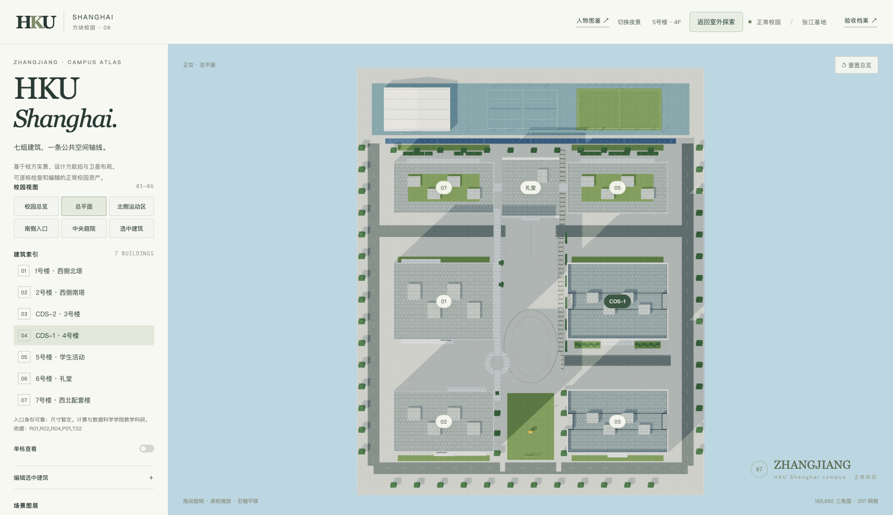
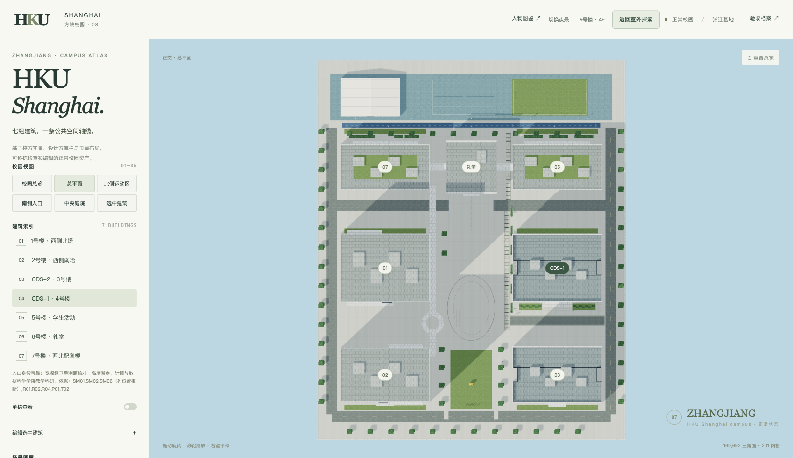
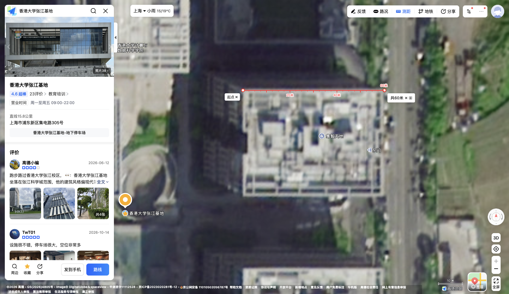
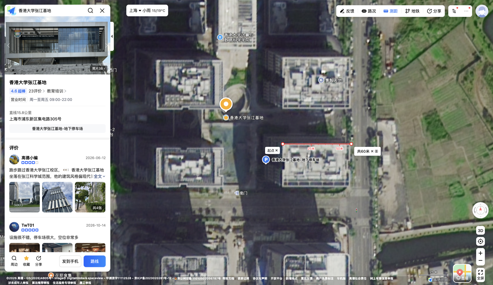
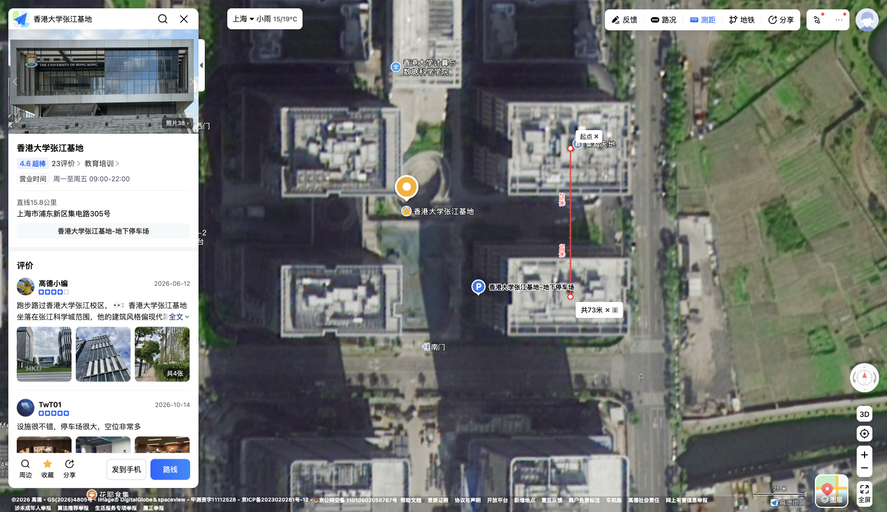
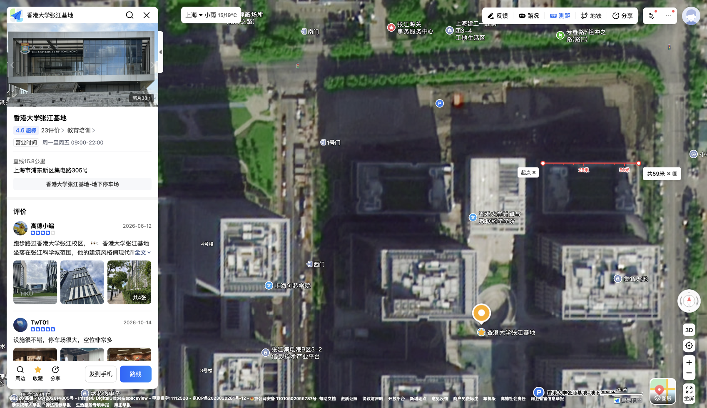
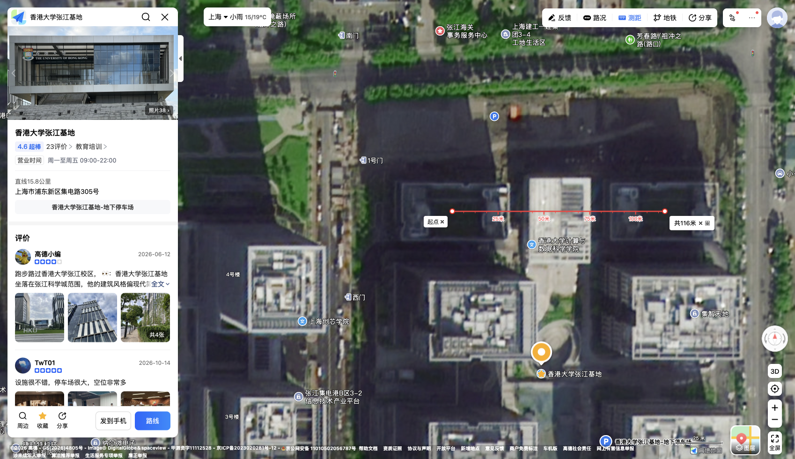
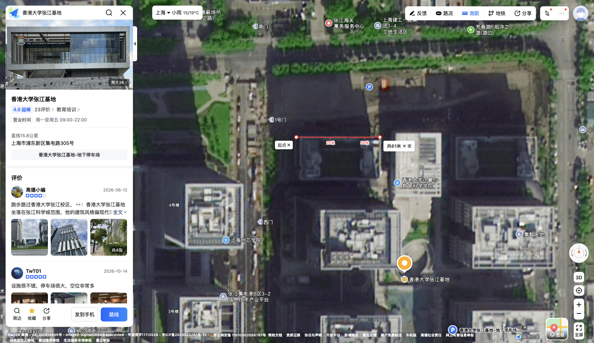

HKU SHANGHAI · v8-scale1 · 2026-11-14楼体尺寸保留，东西楼距修正
高德原生测距：CDS-1 约60×45 m，北侧东西楼中心距约116 m。模型两列各外移6 m，步道与碰撞同步；没有整体缩小三倍。楼高、地下深度和未测边界继续暂定。
完整方法与误差说明 · 测量索引 JSON · 返回校园
| 测量 | 地图读数与实用误差 | 模型修改前 → 后 |
|---|
| SM01 · CDS-1 / B04 屋顶宽度 | 60 ±2 m | 59.7 → 59.7 m |
| SM02 · CDS-1 / B04 屋顶进深 | 45 ±2 m | 45 → 45 m |
| SM03 · CDS-2 / B03 屋顶宽度 | 60 ±2 m | 59.7 → 59.7 m |
| SM04 · B04—B03 屋顶中心南北间距 | 73 ±3 m | 72 → 72 m |
| SM05 · B05 屋顶宽度 | 59 ±2 m | 59.7 → 59.7 m |
| SM06 · B07—B05 屋顶中心东西间距 | 116 ±3 m | 104 → 116 m |
| SM07 · B07 屋顶宽度 | 61 ±2 m | 59.5 → 59.5 m |
| SM08 · 北侧可见地块边缘宽度 | 208 ±5 m | 208 → 208 m |
相同俯视角

修改前 · 两列中心距104 m
修改后 · 两列中心距116 m；楼体尺寸与相机不变原始测距截图
点击可查看原尺寸。拍摄日期未知；八条线来自同一高德影像，不算独立影像证据。屋顶测量仅近似平面尺寸；不是地面测绘或权属边界。

SM01 · CDS-1 / B04 屋顶宽度 · 60 m
保留；屋顶外缘作为主体宽度近似，不含立面凸出装饰SM02 · CDS-1 / B04 屋顶进深 · 45 m
保留；同一屋顶两端，不跨越屋顶和地面量距
SM03 · CDS-2 / B03 屋顶宽度 · 60 m
保留；由导览图楼号和东列南塔位置对应
SM04 · B04—B03 屋顶中心南北间距 · 73 m
差 1 m 在误差内，保留；同型同高塔楼降低视差影响
SM05 · B05 屋顶宽度 · 59 m
保留；中央礼堂东侧低楼
SM06 · B07—B05 屋顶中心东西间距 · 116 m
修正；两列各外移 6 m，高层采用共列对齐推断
SM07 · B07 屋顶宽度 · 61 m
保留；中央礼堂西侧低楼SM08 · 北侧可见地块边缘宽度 · 208 m
仅作总体宽度核对；不是权属边界测绘，也不确认南北长边© 高德；影像 DigitalGlobe & spaceview。仅存档作为建模参考。既有官方实景与用户导览图用于核对楼栋身份，详见报告。